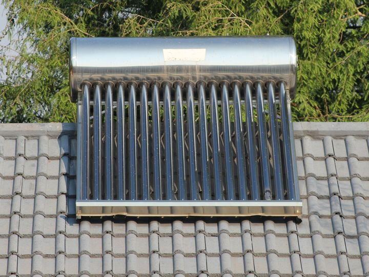
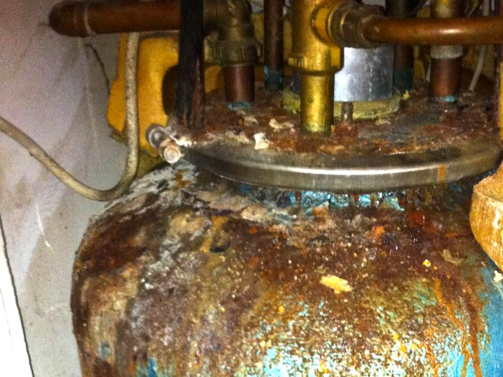
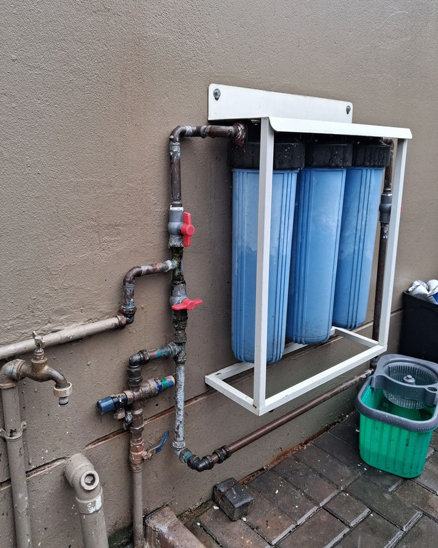
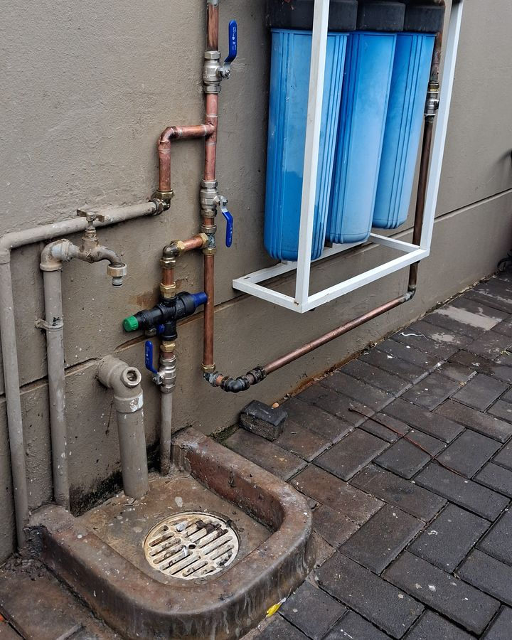

Geysers
Burst or leaking geysers, replacements, vacuum breakers, valves, drip trays and inspections. Free geyser inspection →
Krugersdorp · West Rand · Johannesburg · Pretoria
Geysers, leaks, bathrooms and water filtration across Krugersdorp, Johannesburg and Pretoria. Written quote first. Neat work. Fast replies on WhatsApp.

Quality plumbing. Clean water. Every time.
Krugersdorp • West Rand • Johannesburg • Pretoria
What we do
Burst or leaking geysers, replacements, vacuum breakers, valves, drip trays and inspections. Free geyser inspection →
Leaking pipes, taps and valves, low pressure, blocked drains and ongoing maintenance. Landlords & agents: one plumber for all your units.
Whole-house filter and UV systems, supplied and installed with isolation valves and a bypass.
Water off again? A backup tank with an automatic booster pump keeps your taps, shower and geyser going when the municipal supply drops, and refills by itself when the water comes back. Supplied, installed and tested, with a filter and mains bypass.
Basins, vanities, mixers, toilets, showers and full bathroom plumbing for renovations.
Hot and cold supply, drainage and fittings for new builds, extensions and conversions.
Send us a photo of the problem on WhatsApp and we'll tell you what it needs.
Most geyser bursts give warning signs first. We'll check your geyser's safety valves, vacuum breakers, drip tray and pipework, and tell you honestly what's fine and what isn't.
To book, WhatsApp us or call 072 230 9222.
Got a problem already? Tell us when you book and we'll bring the right parts.
In our service areas. Terms apply; ask us on WhatsApp.

Recent work


Whole-house water filter, re-plumbed in copper with new valves.
Why APS
You know the price before we start. If we find extra work on site, we price it and get your OK before we do it.
Work to SANS 10252 / 10254 standards and local bylaws.
Every job is pressure or leak tested, and we show you what we did before we hand over.
One number for calls and WhatsApp. Send photos and get straight answers without chasing anyone.
How it works
Service areas
Based in Krugersdorp and working across the West Rand, Johannesburg, Pretoria and the East Rand.
Not on the list? WhatsApp us your suburb and we'll let you know.
Krugersdorp, Muldersdrift, Mogale City, Randfontein
Roodepoort, Randburg, Northcliff, Fourways
Pretoria, Centurion and surrounds
Edenvale, Bedfordview and surrounds
Questions
Switch the geyser off at the distribution board (DB), then close the cold-water isolating valve on the geyser or turn off the mains. Then WhatsApp us a photo and your suburb on 072 230 9222.
Switch the geyser off at the DB until the water is back and the air is out of the taps, then switch it on again. If it leaks or trips afterwards, WhatsApp us a photo.
Yes. WhatsApp clear photos of the problem to 072 230 9222. For many jobs we can give you a quote from photos; for others we'll book a visit.
Always. You get a written quote first, and any extra work found on site is priced and approved by you before we do it.
Yes. We supply quality fittings and parts from trusted suppliers, and they're included in your quote.
Yes. One plumber and one number for all your units, with a written quote before every job. WhatsApp us your first job or your property list.
We work to SANS 10252 / 10254 standards and local bylaws.
Contact
The fastest way to reach us is WhatsApp. Send a photo and your suburb and we'll get back to you.
Talk to Charl · Call or WhatsApp
072 230 9222Same number on WhatsApp, or use the form.
Hours: Monday–Saturday, 24/7
Emergencies welcome — call or WhatsApp 072 230 9222.